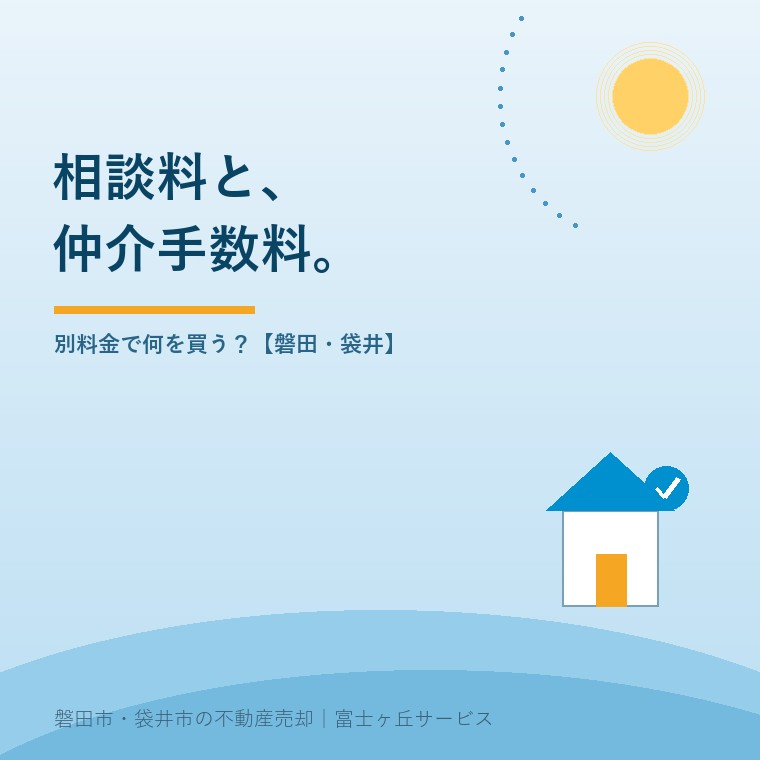
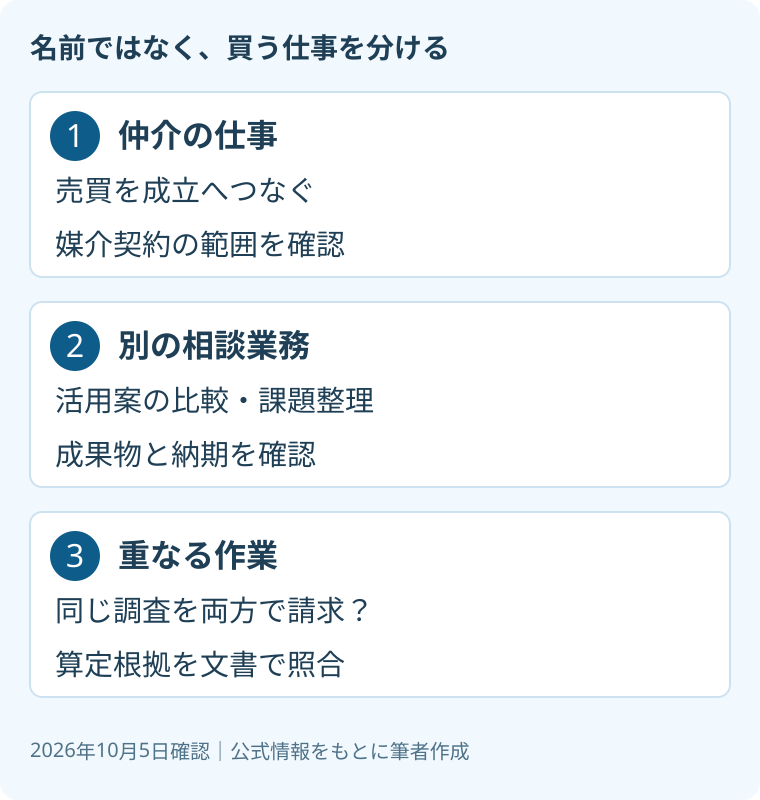

不動産相談料と仲介手数料、2つの境界
2026年10月5日｜カテゴリ：コスト・報酬

この記事の要点
実家を売る相談なのに、仲介手数料とは別に相談料も払うの？
媒介とは別の課題整理や活用案の比較なら、別報酬となる場合があります。料金名ではなく、作業・成果物・支払条件を仲介契約と照合します。同じ仕事への二重請求かは個別確認が必要です。磐田市・袋井市では、介護施設の運営から不動産事業を始めた富士ヶ丘サービスのような地域密着の会社に相談する選択肢があります。
大石浩之（磐田市／不動産業）です。実家をどう扱うか相談した段階で、有料の提案書を勧められる。売れたときの仲介手数料も別にかかると言われる。この場合、先に聞くのは「高いか安いか」より「何を別に頼むのか」です。
私は、相談を無料にするのが常に親切だとは考えません。売らない選択も含めて材料を集める仕事には手間がかかります。ただし、有料にするなら、持ち主が受け取る成果を説明する責任が増えます。2026年10月5日に公式資料を確認しました。
相談料は、仲介手数料の別名ではない
国土交通省の2024年6月の資料は、媒介業務に含まれないコンサルティング業務を別業務として整理しています。媒介とは、売主と買主の間に入り、売買の成立を支える仕事です。別業務の報酬には、媒介報酬規制の適用がないと示しています。
資料が挙げるのは、空き家の活用に関する課題整理、相続に係る相談、活用方針の提案・比較などです。仲介の前に行う場合も、仲介とは別に行う場合もあります。依頼者の事情を整理し、次の専門家への橋渡しをする仕事も含む考え方です。
私は、料金欄に「相談料」と書くだけでは区分できないと考えます。売却の仲介で行う調査を、別の名前で再び請求していないかを見るためです。個別の請求の適法性は、契約と実際の作業を確認し、専門家に確認を。

仲介手数料の上限と相談料の範囲は、別々に確認します。上限の仕組みは仲介手数料の計算と低価格物件の特例で整理しています。相談料を足した総額を、仲介手数料の上限そのものだと読み替えないでください。
意欲80％超でも、実施が年5件未満は7割近く
国土交通省資料の印刷12頁は、不動産流通推進センターの登録者調査等を集計しています。対象は不動産コンサルティングマスター登録者です。2025年12月時点のアンケート結果等に基づき、取り組み意欲のある事業者は80％超と記載されています。
一方、直近1年間に全く行っていない、または5件未満とした事業者は7割近くです。取り組む事業者でも、約80％が1件当たり報酬50万円未満でした。資料は、媒介との境界が不明瞭で、相談業務の報酬を受領できないケースにも触れています。
私は、この意欲と実施の差が意外でした。有料相談が十分に定着していると、この調査だけで判断することはできません。業者全体を調べた統計でも、磐田市の料金相場でもありません。50万円未満という区分は、持ち主への推奨料金ではありません。
私の商売の感覚では、報酬の総額を聞くだけでは比較ができません。何件の案を比べ、何回の確認を行い、いつ資料が届くのかに置き換えます。料金を払って増える判断材料が見えなければ、数字の大きさだけを議論しても答えは出ません。
良い点は、売らない案にも費用をかけられること
有料相談の良い点は、売買が成立するかとは切り離して作業を依頼できることです。売却、賃貸、当面の保有を比較する資料が契約の対象なら、持ち主は売却以外の道も検討できます。これは別契約を考える際の実務上の利点です。
例えば、売却案と賃貸案を比べるなら、比較する期間や修繕の前提をそろえます。「賃貸のほうが得」と一言で返す提案より、支出の項目と未確認事項が残る資料のほうが、家族で検討し直せます。これは私が提案書に求める内容です。
その上で、注文したいのは仕事の重なりを見えるようにすることです。仲介契約にも相談契約にも「調査一式」としか書かれていない場合、何に対して払うのかが曖昧です。私は、別料金には別の作業と成果物が要る、と言い切ります。
私には迷いもあります。相談の途中で新しい課題が見つかり、予定した範囲では足りないことも考えられます。最初からすべてを固定すると必要な調査を外す恐れがある。だから追加作業は、着手前に内容と金額を再合意する形がよいと考えます。
契約前に、作業・成果物・支払条件を照合する
相談料と仲介手数料の照合では、二つの契約の作業欄を並べます。口頭の説明だけでなく、見積書や業務内容の書面に同じ項目がないか確認します。重なっているから直ちに違法と決めつけず、各項目の役割と算定根拠を尋ねます。
| 確認する欄 | 持ち主が尋ねること |
|---|---|
| 作業の範囲 | 仲介で行う調査と何が違うか |
| 成果物・納期 | 比較表、報告書など何がいつ届くか |
| 支払条件 | 売れなくても払うか、途中終了はどう扱うか |
| 追加費用 | 実費・追加調査の事前合意はあるか |
成果物は、厚い冊子であればよいわけではありません。資料の取得日、調べた範囲、確認できなかった箇所が残っているかを見ます。税務や登記の判断を含むように見える場合は、誰が責任を持つのかも確認します。相談窓口と資格者の判断は区別します。
支払時期も切り離して考えます。売却が成立しなかったときに相談料が残る契約なのか。仲介を別会社へ依頼しても報告書を使えるのか。途中で家族の方針が変わったら、完成済みの作業と未着手の作業をどう精算するのか。この三つは書面で残したい点です。
広告費まで別に提示された場合は、相談料と混ぜず、売却広告費を別に払う条件を確認します。査定と専門的な評価の違いは査定と不動産鑑定の使い分けが判断材料になります。
磐田・袋井の実家では、帰省前に依頼を区切る
磐田市・袋井市の実家について遠方の家族が相談するなら、現地でしか確認できない作業と、資料だけでできる作業を分けて依頼します。これは地域の料金相場の説明ではなく、私の段取りの提案です。帰省と業者の訪問を同じ日にできるかも確認します。
私はこう考えます。机に相談契約と仲介契約を並べ、一方には「売買を成立させる仕事」、他方には「売るか決める材料」と書く。両方に同じ調査が載っていたら、その場で理由を聞きます。これは実際の相談事例の紹介ではなく、私が持ち主の立場で点検するならという考え方です。説明がつくまで契約を増やさなくてもよいと思います。
今日できる確認は、相談料の見積書に「納品されるもの」を一行書いてもらうことです。家族の代理で申し込むなら、依頼者と持ち主の関係、資料の共有先も決めます。親の介護費用を確保したい相談なら、売却を選ばない場合の支出も比較対象にします。
富士ヶ丘サービスは、磐田市・袋井市を中心に、介護と不動産を一体で相談できる窓口を設けています。家族が困らない売却のため、私なら料金の話と作業の話を同じ書面で案内します。請求に疑問が残るときは、弁護士などの専門家に確認を。
よくある質問
- 不動産相談は必ず無料ですか？
- 必ず無料とは限りません。媒介とは別の課題整理や活用案の比較を有料で依頼する場合があります。申し込む前に、無料の相談範囲、有料に切り替わる時点、成果物と料金を確認してください。仲介を依頼しなくても支払う契約なのかも確認します。相談料という名前だけで、依頼内容や請求の妥当性は決まりません。
- 相談料と仲介手数料を両方払うのは二重請求ですか？
- 両方があるだけで二重請求とは断定できません。国土交通省は、媒介に含まれない相談業務を別業務として整理しています。ただし、同じ調査を二つの契約で請求していないか、作業・成果物・算定根拠を照合します。説明が不明瞭なら支払条件も含めて文書で問い合わせ、個別の適法性は専門家に確認を。
- 50万円未満なら相場どおりと考えてよいですか？
- 相場どおりとは判断できません。国土交通省資料の50万円未満という区分は、登録者調査における報酬分布です。磐田市の料金相場でも、推奨額でもありません。同じ期間、作業、成果物、実費の条件で見積りを比べます。業務範囲が違う相談料と、売買成立に対する仲介手数料を金額だけで比較しないでください。

この記事を書いた人：大石浩之（磐田市／不動産業・宅地建物取引士）
富士ヶ丘サービス株式会社。磐田市・袋井市を中心に、介護と相続、実家の売却を一体で相談できる窓口を設けています。家族が困らない売却のため、資料と現地の条件を一件ずつ整理します。著者プロフィール
参考にした公式情報
2026年10月確認（確認日：2026年10月5日）。
本記事は2026年10月5日時点の公開情報と筆者の意見です。制度・数値・手続き・契約条件は変更されることがあります。税務・登記・相続・重要事項説明・契約などの個別判断は、税理士・司法書士・弁護士などの専門家に確認を。